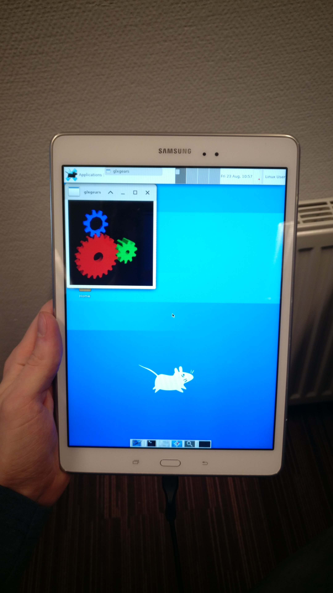

Samsung Galaxy Tab A 9.7 2015 (samsung-gt510)
|
 Samsung Galaxy Tab A 9.7 WiFi (2015) | |
| Manufacturer | Samsung |
|---|---|
| Name | Galaxy Tab A 9.7 (2015) |
| Codename | samsung-gt510 |
| Released | 2015 |
| Category | community |
| Original software | Android 7.1.1 with Linux Kernel version 3.10.49 |
| postmarketOS kernel | Mainline |
| Hardware | |
| Chipset | Qualcomm Snapdragon 410 (MSM8916) |
| CPU | Quad-core 1.2 GHz Cortex-A53 |
| GPU | Qualcomm Adreno 306 |
| Display | 768x1024 (XGA) PLS |
| Storage | 16GB |
| Memory | 2GB |
| Architecture | aarch64 |
| Type | tablet |
| Unixbench Whet/Dhry score | 904.0 |
{kind=link}
| USB Networking |
Works
|
|---|---|
| Flashing |
Works
|
| Touchscreen |
Works
|
| Display |
Works
|
| WiFi |
Works
|
| FDE |
Works
|
| Mainline |
Works
|
| Battery |
Partial
|
| 3D Acceleration |
Works
|
| Audio |
Works
|
| Bluetooth |
Works
|
| Camera | |
| GPS |
Works
|
| Mobile data |
Works
|
| SMS |
Works
|
| Calls |
Partial
|
| USB OTG | |
| NFC |
Unavailable
|
| Accelerometer |
Works
|
|---|---|
| Magnetometer | |
| Ambient Light |
Works
|
| Proximity | |
| Hall Effect |
Works
|
| Barometer | |
| Power Sensor | |
| Camera Flash | |
|---|---|
| Keyboard | |
| Touchpad | |
| USB-A | |
| HDMI/DP | |
| Ir TX |
Unavailable
|
| Ir RX | |
| Stylus | |
| Haptics | |
| Ethernet | |
| FOSS bootloader | |
|
This device is based on the Snapdragon 410. See the SoC page for common tips, guides and troubleshooting steps |
Samsung Galaxy Tab A (2015) is a series of devices based on Qualcomm Snapdragon 410 SoC which has great mainline Linux support.
This page should generally apply to any 9.7 inch variant of the device (WiFi, LTE, with and without the pen support). Note that those variants may have different amount of RAM. For 8.0 inch variants see Samsung Galaxy Tab A 8.0.
Variant differences
The device has multiple variants, the main differences in the features are shown in the table below:
| Feature | WIFI | LTE | Notes |
|---|---|---|---|
| GPS | Works | WiFi variant needs investigation. Modem support is not enabled for the WiFi variant at this time. | |
| Mobile data | Unavailable | Works | |
| SMS | Unavailable | Works | |
| Calls | Unavailable | Partial | See "Known Issues" below for call audio. |
Contributors
- jja2000
- TravMurav
- Minecrell (and others from the msm8916-mainline team)
Maintainer(s)
- TravMurav
- jja2000
Users owning this device
How to enter flash mode
Download mode: When turned off hold Power + Volume Up + Home
lk2nd Fastboot: When turned off hold Power + Volume Down
Installation
lk2nd is a secondary bootloader that provides a standard fastboot interface, which can be used to boot postmarketOS without android boot flashed or pmbootstrap flasher flash_kernel.
- Download lk2nd-msm8916.img from Releases page on Github.
- Boot your phone to bootloader (Odin/Download) mode by holding Volume Down and Home while powering up.
- Follow lk2nd instructions to install lk2nd. Basically flash it to boot partition (
heimdall flash --BOOT lk2nd-msm8916.img) - Follow Qualcomm_Snapdragon_410/412_(MSM8916)#Installation to install postmarketOS.
| Note: Enter lk2nd fastboot mode by pressing only Volume Down + Power (without Home). Pressing Home additionally will bring you to the Samsung Download mode. |
Known Issues
- Charger driver is not present at this time, but bootloader seem to enable it if the device was turned on by plugging the cable in. You can check if the device charges by reading the value from
/sys/class/power_supply/max170xx_battery/current_now - Phone calls audio on LTE variants may be only available via headphones output at this time.
- Due to a bug (?) in DSI driver, Brightness change DSI commands sent to the panel result in de-sync of the video data and produce some visual artifacts. To remove the artifacts simply turn the display off and on. You may want to make sure that automatic brightness control is disabled.
Mainline Kernel Status
Table of components in the device
| Component | Model | Mainline kernel driver | Status |
|---|---|---|---|
| RGB LED | ? | ? | Doesn't exist in hardware? |
| MicroUSB | - | Yes | Working in kernel fork (Only Peripheral mode) |
| eMMC | (Android lists) Toshiba 400073 | Yes | Working in kernel fork |
| Battery/Charging/Fuelgauge | MAX77849 | ? | Fuel-Gauge works with mainline driver, charger may work unconfigured. |
| Volume/Power/Home keys | GPIO | Yes | Working in kernel fork |
| Capacitive keys | Part of Atmel Touchscreen | No | Needs driver changes |
| Accelerometer | STMicroelectronics K2HH | Yes, supported in kernel fork | Same as matisseve, should work without trouble |
| Light Sensor | Capella Micro CM3323 | Yes | |
| Display | Samsung S6D7AA0 LTL101AT01 | No | Working in kernel fork |
| Backlight IC | Texas Instruments lp8558 | Not strictly needed | Brightness is set through DSI, PWM signal goes to lp8558 (results in artifacts as DSI commands desync the video data) |
| Audio | PM8916/MAX98357A | Yes | Audio over headset and mic work. Speakers are powered by external amp (MAX98357A or similar). |
| Touch Screen | Atmel MXT 1664T | Yes | Working in kernel fork |
| USB Switch / MUIC | Part of MAX77849 | ? | ? |
| Proximity sensor | Semtech SX9500 | Yes | Working in kernel fork, proximity sensor on the front |
| GPU | Adreno 306 | Yes | Working in kernel fork |
| Wi-Fi | WNC3660B | Yes | Working in kernel fork, Using the WCN3660B compatible |
| Bluetooth | WCN3660B | Yes | Working in kernel fork, Using the WCN3660B compatible |
| GPS | qcom hexagon modem | In userspace | Part of modem DSP: Can be handled by ModemManager or gpsd. LTE variant should work, WiFi variant need investigation. |
| Front camera | Siliconfile Technologies Inc. SR200PC20 | No | Not sure, but there's a datasheet |
| Main camera | Siliconfile Technologies Inc. SR544 | No | Old v4l2 patch for unrelated hardware, may be adaptable to current Mainline |
Running some diagnostics programs on Android will likely point out some more info about sensors and any other specifications. At some point I (jja2000) will switch around to Android for a bit to fill in the table. If anyone reading this finds some driver for any of the missing parts let me know on Matrix and if possible edit the table itself.
Pictures
Samsung Galaxy Tab A running phosh
{kind=link}